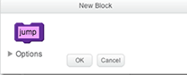
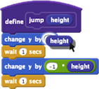

Clique em "Criar um bloco" para ver essa caixa de diálogo:

Clique em Opções para adicionar entradas. Por exemplo, adicionar uma entrada de número:
No bloco
define, as entradas aparecerão como blocos arredondados cor roxo claro. Para usá-las, arraste cópias dos blocos de entrada em outros blocos dentro do script define.

Observação: os blocos de entrada
só podem ser usados no script define.